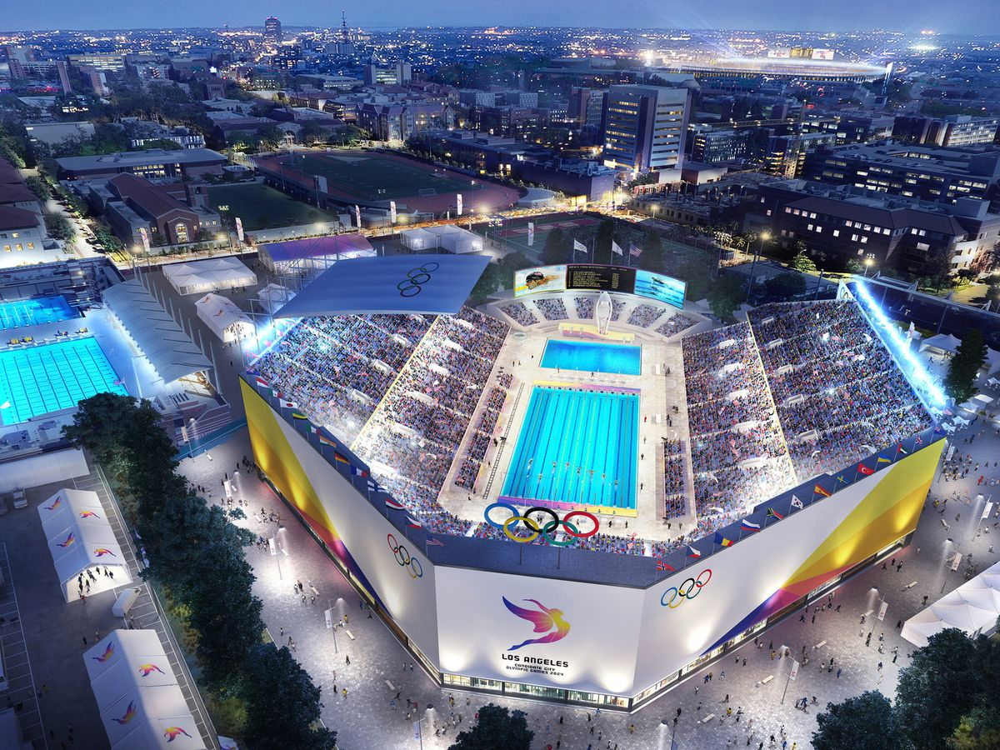
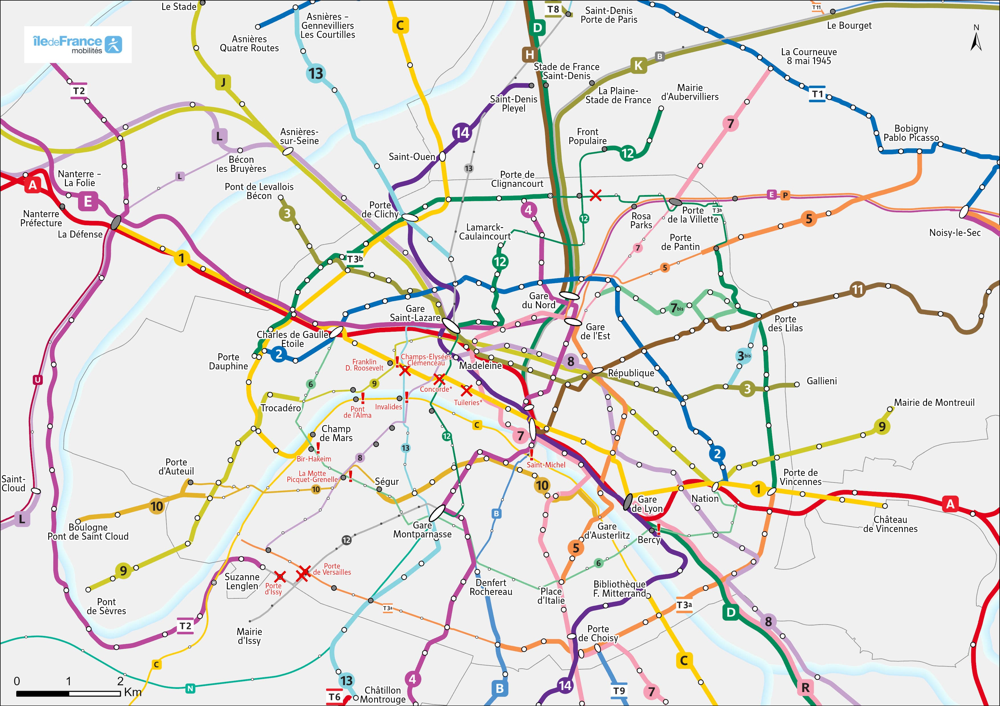
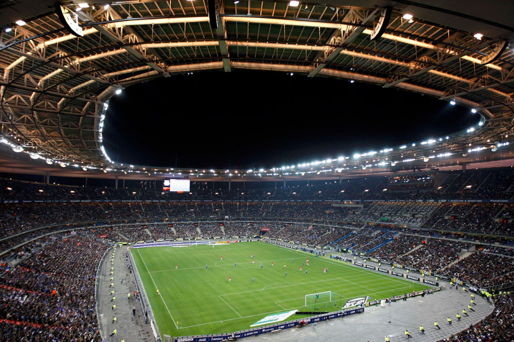
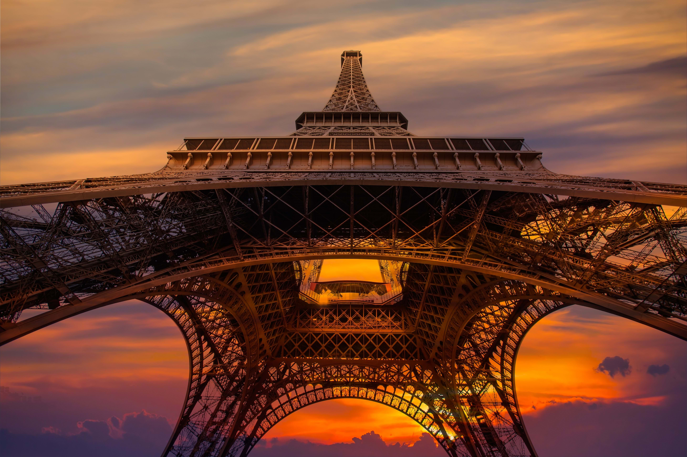
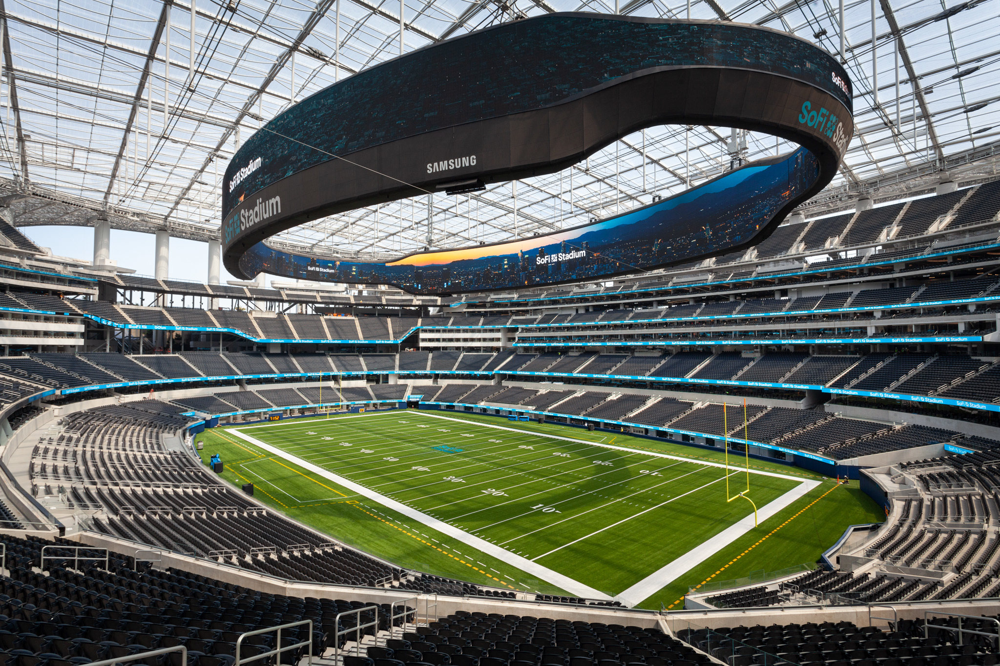
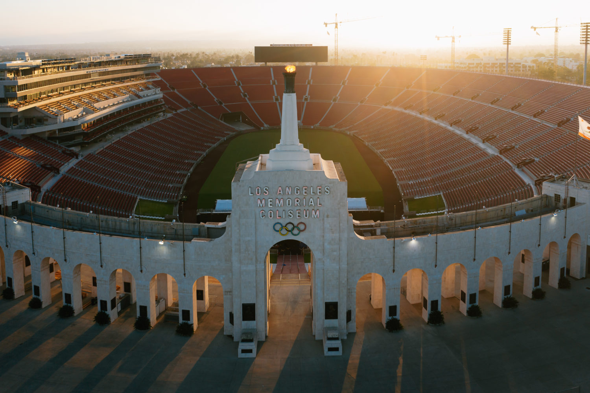
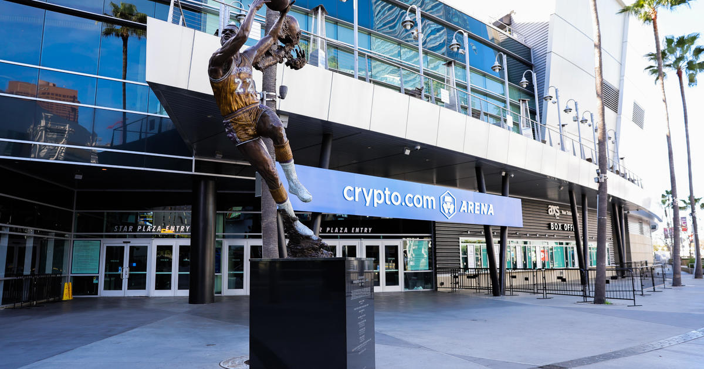

Infrastructures
The Excellence of Reusing Iconic Locations: A Source of Pride for the 2024 Olympics
During the 2024 Olympic Games, France proudly showcased his historical heritage by utilizing several iconic locations. Among these prestigious sites, the Château de Versailles stood out as a grand stage, where history and sporting excellence met harmoniously.
Château de Versailles: A Symbol of Greatness and Elegance

Globally recognized for its majestic architecture and sumptuous gardens, the Château de Versailles embodies French greatness and elegance. This exceptional site was chosen to host the equestrian events, offering a magnificent and unique setting for both spectators and athletes.
More than 20,000 people experienced these unforgettable moments in this historically rich location, blending the beauty of sport with art and nature. The expansive park of the Château perfectly met the logistical demands of the Games. Its vast space allowed for smooth organization of events while ensuring an immersive and unforgettable experience for spectators.
Optimal Accessibility: A Major Asset

One of the most remarkable aspects of organizing events at the Château de Versailles was the easy access provided to visitors. Thanks to exceptional transportation infrastructure, the site was easily accessible from Paris and its surrounding areas.
To further enhance the ease of travel, additional facilities were put in place, allowing spectators to reach the site effortlessly. Public transportation played a key role in this success, with several convenient options:
Metro:
• Line 9 to Pont de Sèvres, then Bus 171 to Versailles
RER:
• Line C, directly connecting Paris to the Château
Bus:
• Line 171 connecting the main access points
Stade de France: The Temple of French National Sports and an Unforgettable Closing Ceremony
The Stade de France, a legendary venue that has hosted major sporting events such as the 1998 FIFA World Cup, once again took the center of the stage during the 2024 Olympic Games. Known for hosting major athletics and rugby events, this modern sports monument was also chosen to host the closing ceremony, marking the end of this global event in a grand style.
A Glorious History: A Venue for Major Sports Events
Since its inauguration, the Stade de France has been the stage for unforgettable moments. It is not only a place of competition but also a symbol of French and international sporting excellence. During the 2024 Olympic Games, it once again proved why it is considered one of the world’s most prestigious stadiums.
With an impressive capacity of over 80,000 seats, the Grand Stade de France offered spectators an unparalleled view of the Olympic competitions, creating an electrifying and unmatched atmosphere. Whether for athletics, rugby, or other sports, this venue became the gathering point for passionate fans from around the world, sharing moments of adrenaline and joy together.
Optimal Accessibility: A Varied Transport Network
Another strong point of the Grand Stade de France is its exceptional accessibility. Well-served by a dense and varied transportation network, it allowed thousands of spectators to reach the venue quickly and easily. The infrastructure in place ensured a smooth flow of visitors, enhancing the overall experience.
Here are the various transport options to reach the Stade:
Tram:
• T1, stop at Hôpital Delafontaine, then a short walk to the stadium
• T8, stop at Saint-Denis - Porte de Paris, followed by a walk to the stadium
Metro:
• Line 13, stop at Saint-Denis - Porte de Paris
RER:
• B, stop at La Plaine - Stade de France
• D, stop at Stade de France - Saint-Denis
Bus serving the vicinity of the stadium:
• 139
• 153
• 170
• 239
• 353
• 255
Eiffel Tower: A Global Icon and the Epicenter of Olympic Beach Volleyball
During the 2024 Olympic Games, the Eiffel Tower, the undisputed symbol of France and its international influence, once again took center stage for a world-class event. At the foot of this iconic monument, a temporary stadium was specially set up to host the beach volleyball events, creating a unique intersection of sport and heritage.
A Mythical Location Transformed into an Olympic Stadium
The Eiffel Tower, a true Parisian icon, provided an absolutely unique setting for the beach volleyball competitions. The temporary stadium, carefully designed for the occasion, combined the intensity of sport with the historic beauty of this exceptional location. Accommodating nearly 13,000 spectators, this venue created a lively and intense atmosphere where every match became a spectacle, enhanced by the silhouette of the Eiffel Tower in the background.
Imagine watching a beach volleyball match with the majestic Eiffel Tower sparkling under the Parisian sky. It was one of the most memorable moments of the 2024 Olympics and a unique experience for spectators from around the world. This place, typically synonymous with romance and contemplation, transformed into a captivating sports arena.
Exceptional Accessibility in the Heart of Paris
In addition to its iconic aura, the Eiffel Tower is ideally located and easily accessible for visitors thanks to numerous transportation options. The 2024 Olympic organizers took full advantage of this strategic location to accommodate thousands of visitors each day.
Here are the main transportation options to access this exceptional site:
Tram:
• T2, stop at Issy-Val de Seine, then transfer to RER C to Champ de Mars - Tour Eiffel
Métro:
• Line 9, stop at Trocadéro, followed by a pleasant walk with a direct view of the Tower
• Line 6, stops at Bir-Hakeim or Trocadéro, offering stunning panoramic views of the Eiffel Tower en route
RER:
• C, stop at Champ de Mars - Tour Eiffel, with direct access and stunning views of Paris from the surrounding areas
Bus in proximity to the competition venue:
• 82
• 42
• 30
• 69
• 86
These three iconic French locations managed to host a massive influx of spectators thanks to their optimal accessibility. Each site, well-served by a wide variety of transportation options, whether by tram, metro, RER, or bus, allowed thousands of visitors to easily reach the events, enhancing the Olympic experience by facilitating travel and ensuring quick and convenient access to these exceptional venues.
The efficiency of these transportation networks played a key role in the success of the 2024 Olympic Games, allowing spectators from around the world to fully enjoy the competitions and shows in prestigious settings such as the Château de Versailles, the Grand Stade de France, and the Eiffel Tower.
Sports Infrastructures for the 2028 Olympic Games
The 2028 Los Angeles Olympic Games promise to be a memorable event, featuring world-class infrastructure ready to welcome thousands of spectators and athletes from all corners of the globe. These facilities combine modernity, capacity, and accessibility, offering optimal conditions for the smooth running of the competitions.
SoFi Stadium: A Technological Jewel for Football and Rugby

The SoFi Stadium, an ultramodern venue located in Inglewood, could become one of the highlights of the 2028 Olympics, hosting football and rugby competitions. With a seating capacity of 70,000, this stadium is equipped with the most advanced technology to provide an immersive experience for both spectators and athletes. Its futuristic architecture and 360° giant screens allow all visitors to enjoy a unique experience, no matter where they are seated in the stadium.
Accessibility:
Metro:
• K Line (Crenshaw/LAX) to Downtown Inglewood stop, followed by a short shuttle or walk to the stadium
Bus serving the SoFi Stadium:
• 115
• 211
• Olympic shuttle services will be set up to reduce congestion and facilitate access to the stadium on major event days
Los Angeles Memorial Coliseum: A Historic Site Renovated for Athletics and Ceremonies

The Los Angeles Memorial Coliseum, a true historical monument that hosted the 1932 and 1984 Olympic Games, will once again be a major asset for the 2028 Games. This iconic stadium is expected to host the opening and closing ceremonies, as well as the athletics competitions, blending the historical legacy of the site with modernized facilities. Recent renovations have enhanced spectator comfort and added high-tech equipment while preserving the prestige and symbolic importance of this landmark.
Accessibility:
Metro:
• E Line (Expo) with a stop at Expo Park/USC, located just a few minutes’ walk from the Coliseum
Bus serving directly the area around the stadium:
• 38
• 81
• Shuttles will be available on high-traffic days to facilitate the movement of spectators from various points in the city
Crypto.com Arena: The Heart of Los Angeles for Basketball and Olympic Events

Located in downtown Los Angeles, the Crypto.com Arena is a premier venue for high-level sports events, especially basketball. It will be one of the key locations for the 2028 Olympics, offering a unique urban experience with its capacity to host over 20,000 spectators.
Thanks to its central location, the Crypto.com Arena is ideally situated for visitors to access the competitions while enjoying the vibrant atmosphere of downtown Los Angeles. However, as with any dense urban area, downtown can experience traffic congestion, particularly during major events.
Alternative transport solutions will be strongly encouraged to mitigate this impact.
Accessibility:
Metro stopping at Pico Station, just a few minutes' walk from the Crypto.com Arena:
• Line A (Blue)
• Line E (Expo)
Bus:
• 460
• 28
• Olympic shuttles will be available to facilitate access on competition days and help avoid typical traffic jams